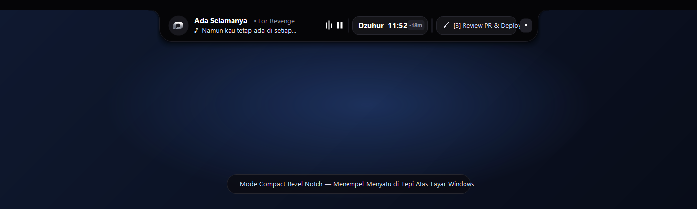
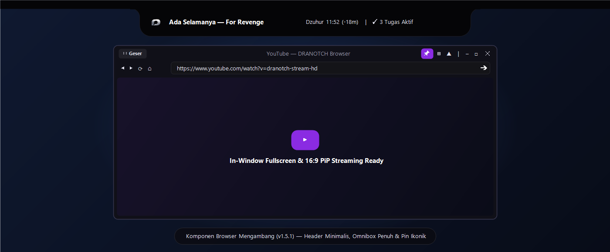
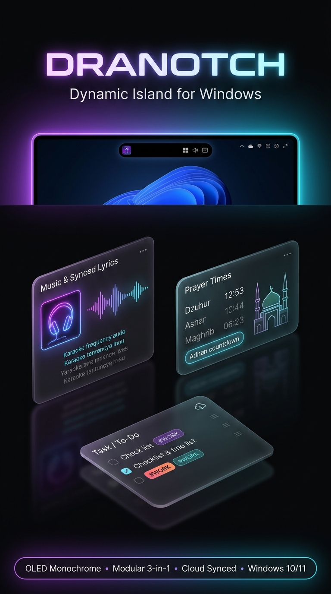

Menyatu secara elegan di tepi paling atas layar monitor Anda. Menggabungkan Pemutar Musik & Lirik Karaoke, Jadwal Waktu Sholat, Cloud To-Do List (Google Drive Sync), serta Browser Mengambang (PiP) dalam satu kapsul hitam OLED.


Klik pada gambar mana pun untuk memperbesar tampilan detail antarmuka DRANOTCH v1.5.1.

Menempel langsung di titik Top = 0 layar dengan bahu lengkung cekung (concave ears) di kiri-kanan atas. Menampilkan musik, lirik berjalan, jadwal sholat berikutnya, dan ticker tugas.
Melebar mulus menampilkan kontrol penuh pemutar musik & lirik sinkronisasi LRCLIB, jadwal sholat harian 40+ kota Indonesia, serta daftar tugas Cloud To-Do.

Header minimalis dengan handle ⋮⋮ Geser, kolom URL omnibox penuh, tombol Pin ikonik 📌, preset rasio 16:9, serta in-window fullscreen.
Setiap komponen dapat dipasang menyatu di dalam kapsul Bezel Notch atau dilepas menjadi jendela mandiri sesuai alur kerja Anda.
Otomatis mendeteksi lagu yang diputar di Spotify, YouTube, Apple Music, atau browser.
Perhitungan astronomis presisi standar Kemenag RI / MABIMS dengan kalender Hijriah.
Kelola daftar pekerjaan harian langsung dari atas layar dengan sinkronisasi Google Drive.
⋮⋮)Tonton video tutorial, live streaming, atau buka referensi web sambil tetap fokus bekerja.
⋮⋮ Geser & Pin 📌
| Shortcut | Fungsi |
|---|---|
| Ctrl + Alt + N | Tampilkan / Sembunyikan DRANOTCH |
| Ctrl + Alt + L | Buka / Tutup Mode Layar Lirik Karaoke |
| Double Click Tugas | Edit teks tugas To-Do secara langsung |
| Esc (di Browser) | Keluar dari mode In-Window Fullscreen |
1. Unduh berkas installer DRANOTCH-Setup-1.5.1.exe melalui tombol di atas.
2. Jika muncul jendela informasi Windows SmartScreen, klik "More info" lalu pilih "Run anyway" (atau jalankan Install-Certificate.bat pada halaman rilis untuk mempercayai sertifikat digital DRANOTCH secara permanen).
3. Aplikasi akan otomatis menempel dengan rapi di tepi atas layar Windows Anda!